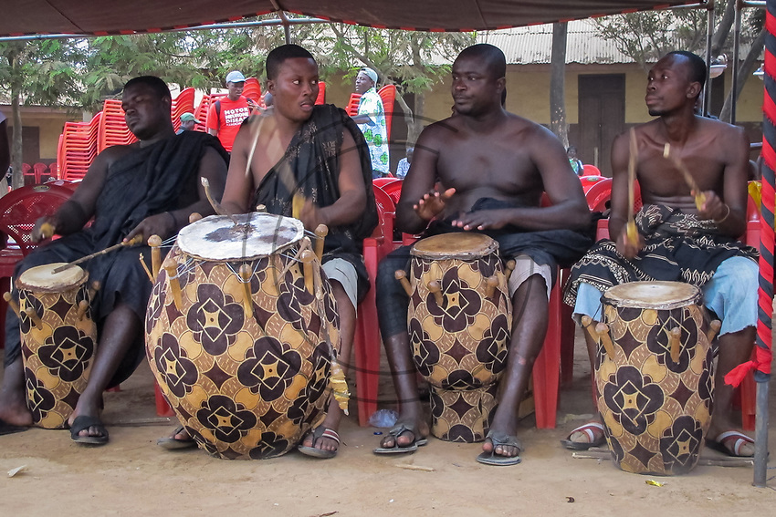
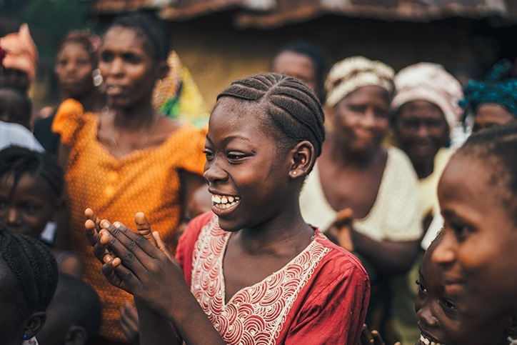
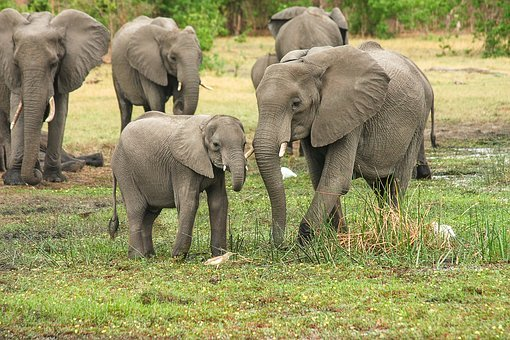
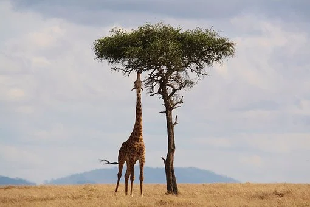
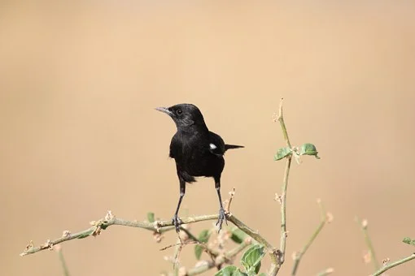
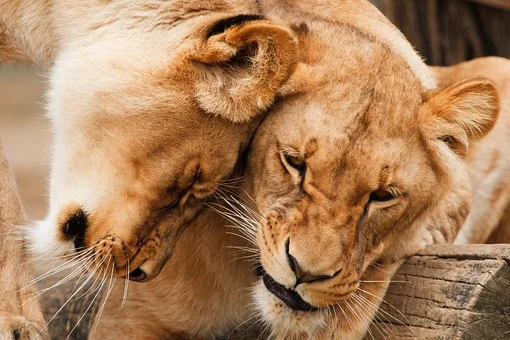
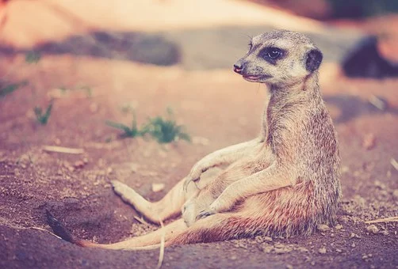

About Akan
The tradition goes back to the Akan tribe: to name their children by the day of their birth. However, Ghanaian names have an even deeper meaning. We take you into this culture and show you as well your Ghanaian name! The Ghanaian culture cannot be considered a uniform one. Rather, it consists of hundreds of different ethnic influences and tribes who speak their own dialects and their own languages, having different cultural backgrounds. However, the different Ghanaian ethnic groups largely share one common belief: the naming of their children. From Ghana to Jamaica The Akan, culturally and linguistically related tribes in West Africa, do the same as other African and Jamaican ethnic groups: Name their children after the respective day they were born. Over time, the Akan have defined seven names per gender, each referring to a day of the week:
READ MORE about Akan here
History About Ghanian Naming
In addition, it is not unusual to put another name before the weekday name: This then describes the situation in which a child was born. If, for example, a couple has a desired a child after a long time, the name " Nhyira ", which means "God's blessing", is not uncommon. Thus there are different additional names: For example, a "Nyambura" was born during the rainy season or an "Abionakam" was born on the way ("along the way"). Of course that's not all. Depending on the region (and whether it is Christian or Muslim) the children will often get common Christian or Muslim first names. With it, at least the first names are complete. The names are given in the following order: Religious name (either Christian or Muslim) Number (First/ Second/... born) Day of the week Twin information Situation Information Surname
Gallary: Tembea Kenya

Elephats in the savvannah

Giraffe feeding

The dark Puncho

Lions Pride

Leopard Resting

Meer Cat in Kenyas' grasslands.